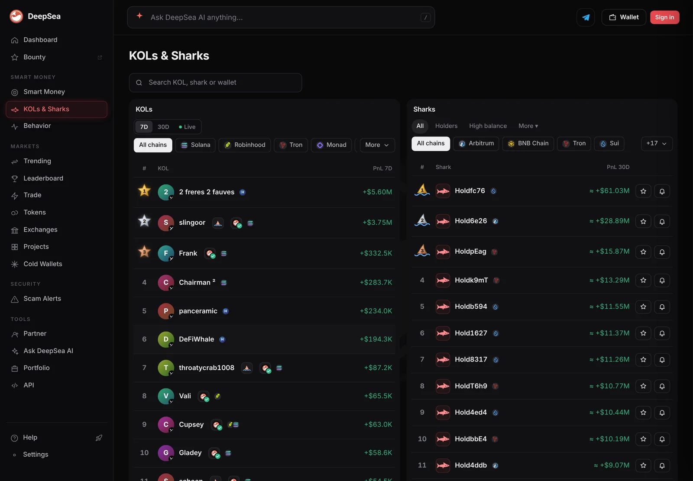
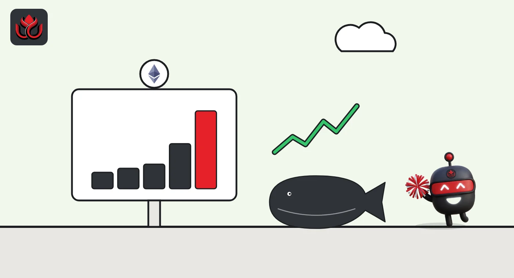

An Ethereum shark was down $159,600 for the month. Two days later it's up $18,100
DeepSea's PnL table shows one wallet's 30-day result swing by $130,000 in less than a day of closed trades, while ether went nowhere for the week. It now has the best 7-day result of any Ethereum shark with a 7-day figure.
Key points
- A shark wallet ending in 3425 showed a 30-day realized loss of $159,632 at 6:33 a.m. ET on November 5. At 6:34 a.m. ET on November 7 it showed a gain of $18,121, DeepSea data shows.
- Most of the swing came between 6:30 a.m. ET on November 6 and 12:34 a.m. ET on November 7: the 30-day figure rose $130,024 while the count of closed trades went up by 8, with 6 more winners.
- Its 7-day realized gain of $174,958 is the best of the 16 Ethereum sharks with a 7-day figure. Those 16 lost a net $962,950.
 What DeepSea's data shows
What DeepSea's data shows
DeepSea's realized PnL table counts profit and loss on closed trades only, matched first in, first out, for wallets in its live feed. LC Insight compared five copies of the table made between November 5 and November 7. The 30-day figure includes only the last 30 days, so old trades drop out as days pass.
For the shark wallet ending in 3425 on Ethereum, which DeepSea labels only as a shark:
- November 5, 6:33 a.m. ET: 30 days minus $159,632 (148 closed trades, 56 winners), 7 days +$9,221
- November 6, 12:32 a.m. ET: 30 days minus $135,838, 7 days +$28,516
- November 6, 6:30 a.m. ET: 30 days minus $111,903 (157 trades, 61 winners), 7 days +$53,554
- November 7, 12:34 a.m. and 6:34 a.m. ET: 30 days +$18,121 (165 trades, 67 winners), 7 days +$174,958 (46 trades, 19 winners)

Data: DeepSea (desea.io), checked November 7, 2026, 6:34 a.m. ET.
A low win rate, a few big winners
Over the full 30 days the wallet still wins only about 41% of its closed trades: 67 of 165. In the last seven days it won 19 of 46. A few large winners did the work, not a high hit rate. The table does not say which tokens it traded.
The wallet is not among the 54 wallets listed in DeepSea's 24-hour shark trade table made at 6:35 a.m. ET.
Wallet ending 3425, 30-day realized PnL
US$ thousand
Closed trades only, first in, first out. Source: DeepSea realized PnL table.
The rest of the Ethereum sharks
DeepSea tracks 39 shark wallets on Ethereum; 16 have a 7-day figure. Five made money and 11 lost, for a net minus $962,950. The next best after 3425 is a wallet ending in 116d, up $74,177 on a single closed trade. The worst, ending in b74f, lost $454,756 on its only closed trade.
The market gave little help. CoinGecko showed ether at $2,243.77 at 6:42 a.m. ET on November 7, flat over seven days (+0.04%) and down 12.6% over 30 days.

Why a 30-day total can mislead
A 30-day total can hide a lot. This wallet looked like a loser for most of the month and turned positive on a handful of trades. Realized figures also ignore positions still open, so the full picture can differ.
LC Insight analysis
This section is our reading of the facts above, not a statement of fact.
- We think the swing shows how lumpy shark results are: a handful of closed trades, plus older trades rolling out of the 30-day window, turned a month of losses positive.
- Winning 41% of trades and still making money means the winners were much larger than the losers. That pattern can also reverse quickly.
- With ether flat for the week, a rising market does not explain the gains. The data does not show which tokens produced them.
What's next
- Whether the 3425 wallet's 30-day figure stays positive as older trades roll out
- Whether Ethereum sharks as a group cut their $962,950 weekly loss
- Ether's 30-day trend, down 12.6%
Disclaimer. This article is based on public information and the sources listed below as of the update time shown. It is for information only and is not investment, legal or tax advice. Figures may change as companies and authorities publish new data.